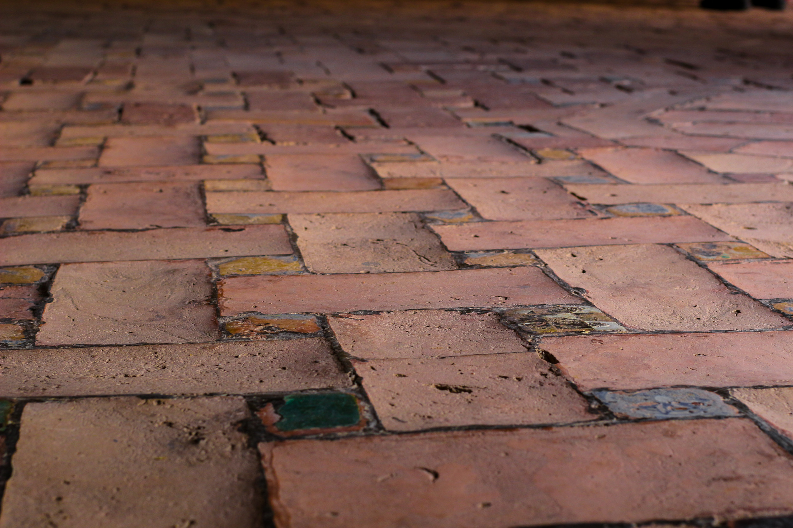

Photography
Work has taken me to places (mostly snowy) all over the world, and I'm rarely without my camera no matter the location. Published internationally for my work in freeskiing, I enjoy landscape & travel shooting and am refining my skills within studio-based product photography.